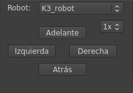

Siguiente:
Botones Desplegables
Subir:
Manual de la GUI
Anterior:
Botón: Ejecutar
Índice General
Parte inferior izquierda
Figura:
Selección de modo Demo: Botones desplegables

Subsecciones
Botones Desplegables
Botones: Funciones
Daniel Peiró 2014-05-16